Abrir, cargar, interpretar.
fiubaLog es una sola página web autocontenida. No se instala ni necesita cuenta: abrís el archivo, cargás un pozo y el motor calcula en segundo plano mientras movés los parámetros.
Cómo se abre
- Extraé el ZIP de entrega y hacé doble clic en
Interpretacion.html. Funciona en Chrome, Edge y Firefox actuales. - En Inicio elegí Cargar pozo (Excel, LAS o CSV), Abrir proyecto (un
.pozo.jsonguardado), Ver demostración (pozo sintético) o el Entrenador. - Si ya trabajaste antes en ese navegador, Inicio ofrece Seguir donde quedaste: el autoguardado recupera zonas, parámetros, presiones, corona y snapshots.
- Esperá el estado Motor listo en la barra superior antes de exportar resultados.
La sarta 3D de Inicio es interactiva: arrastrá para girarla y hacé clic en una herramienta para ver qué mide. Es una demostración armada con el catálogo; no corresponde a ningún pozo cargado.
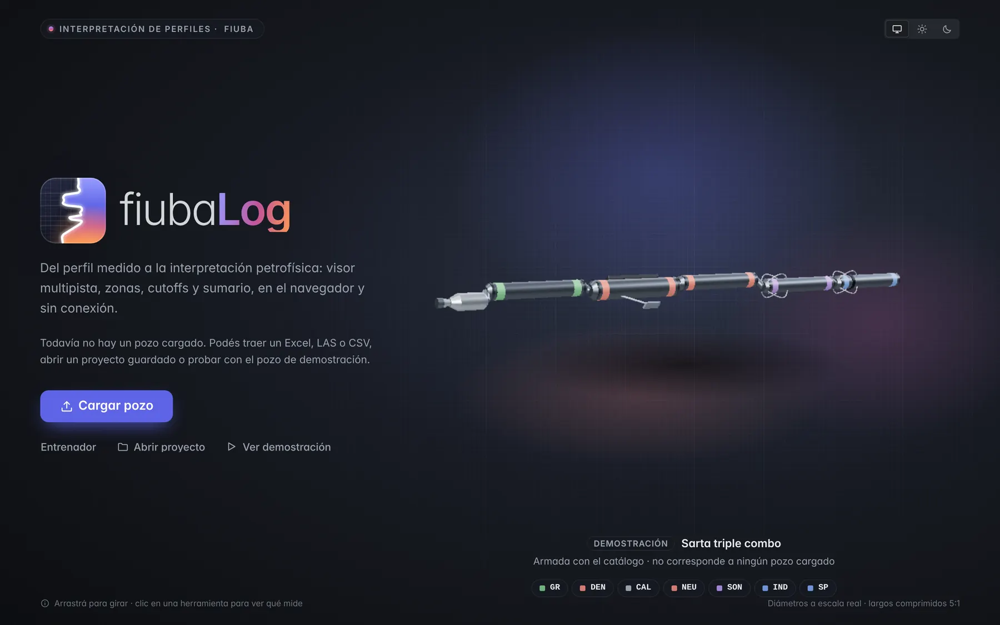
La ruta de cinco minutos
La prioridad de diseño es interpretar un pozo de punta a punta en menos de cinco minutos. Esta es la secuencia mínima; el cronómetro de la barra del flujo la mide por vos.
| Momento | Qué hacés | Qué obtenés |
|---|---|---|
| Carga | Cargar pozo → Cargar datos del TP → Siguiente → Cargar | 18 curvas, 5 zonas y el semáforo de calidad |
| Calidad | Leer derrumbes, caliper inválido y curvas a revisar | Qué tramos no son confiables para densidad y PE |
| Arcilla → Rw | Fijar GR limpio y GR arcilla, matriz y fluido, temperatura | VSH, PHIE, TEMP y RW por zona |
| Saturación → Perm. | Elegir modelo de Sw y exponentes, método de k | SW, BVW, R0 y PERM sobre el visor |
| Cutoffs → Volumen | Mover Vsh, φ y Sw de corte; cargar área y factor de volumen | Neto pay, N/G, sumario por zona y OOIP/OGIP |
| Guardar | Ctrl S y Ctrl E para exportar | Proyecto .pozo.json, LAS/CSV/Excel, figuras e informe |
Todo en una pantalla.
El visor ocupa el centro. Arriba, el proyecto y el flujo; a la derecha, el panel del paso y un riel de pestañas con los gráficos y herramientas. Pasá el puntero por los números.
- 1Ruta y pozo activoInicio › proyecto › pozo. Con varios pozos, el menú cambia de pozo.
- 2Espacios de trabajoPetrofísica (11 pasos) y Geología (5 pasos). Comparten pozo y zonas.
- 3Motor, deshacer y rehacerEl punto verde indica el Web Worker listo; el ícono de guardado muestra el autoguardado.
- 4ProyectoCargar pozo, guardar vista, exportar, menú Proyecto, pantalla completa, modo defensa, ecuaciones, buscar y preferencias.
- 5Barra del flujoCada paso con su estado. Un clic abre sus parámetros en el panel.
- 6Calculados · revisados y cronómetro«11 · 2 rev.» distingue lo que tocaste de los valores de fábrica.
- 7Barra del visorPlantilla de pistas, armar pistas, intervalo, escala (1:8.100…), zoom y ver todo.
- 8EncabezadosEscala, unidad y trazo de cada curva. Con el cursor muestran la lectura a esa profundidad.
- 9ZonasBandas A–E con sus topes. Arrastrá un tope para moverlo.
- 10PistasMedidas y calculadas, con rellenos, escala log en resistividad y columna volumétrica.
- 11Panel del pasoMétodos disponibles, parámetros (global o por zona), herramientas y resultados.
- 12Riel de pestañasPaso, Resumen, Tablas, Avisos, Crossplot, Histograma, MDT, Corona, Tendencias y Más.
El riel y el menú «Más»
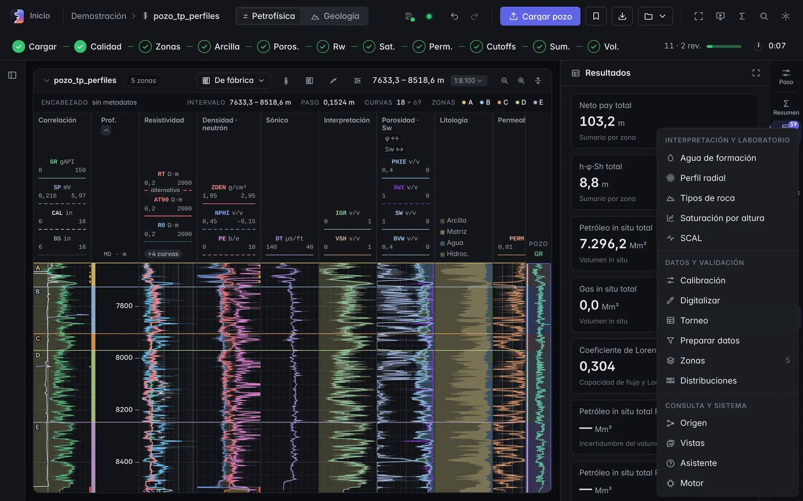
Las pestañas del riel abren paneles que conviven con el visor. Lo que no entra en el riel está en Más, agrupado en tres familias:
Los paneles se pueden agrandar, mover abajo del perfil o plegar con los botones del borde. La disposición se recuerda en el navegador.
Claro, oscuro y tamaño de interfaz
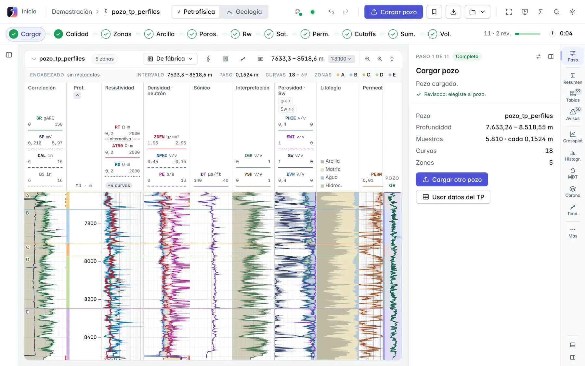
Preferencias (ícono de sol, arriba a la derecha): tema Sistema / Claro / Oscuro y tamaño Compacto / Normal / Grande. Se guardan en el navegador, nunca en el proyecto, y las figuras exportadas no dependen de ellos.
Cargar un pozo en tres pasos.
El asistente de carga reconoce columnas por nombre y unidad, te deja corregir el mapeo y muestra el control de calidad antes de abrir el pozo. Las observaciones nunca bloquean la carga: te avisan qué revisar.
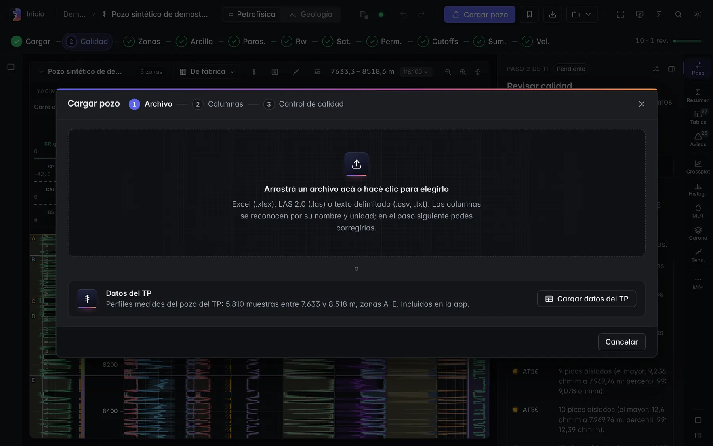
.xlsx, .las, .csv, .txt.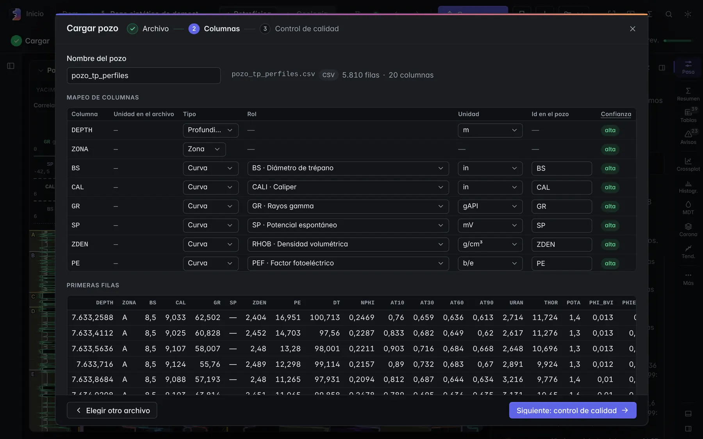
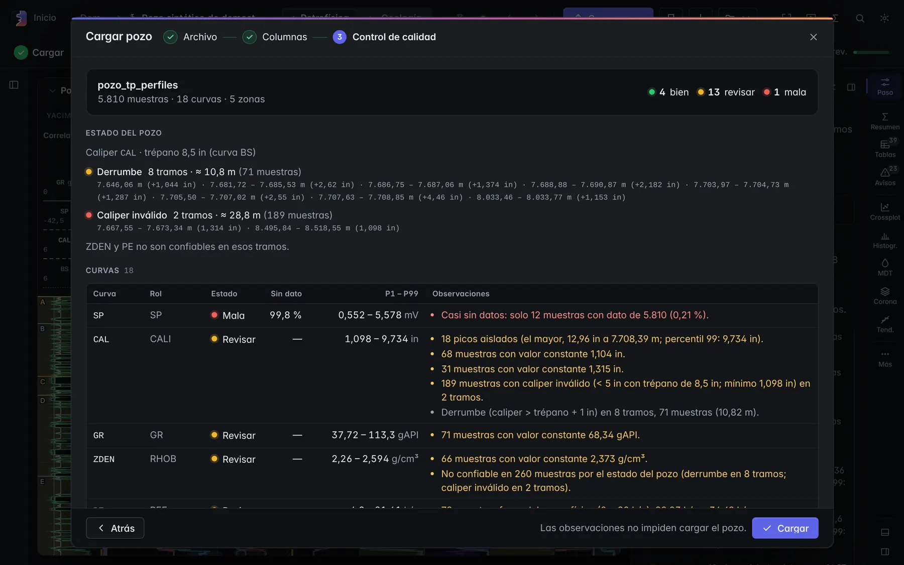
Qué reconoce el asistente
Tipo de columna: profundidad, zona o curva. Una columna de zona crea los topes automáticamente.
Rol: la tabla de mnemónicos traduce los nombres de cada compañía (por ejemplo ZDEN → densidad volumétrica, AT90 → resistividad profunda). El rol es lo que usan los módulos, así que una curva bien mapeada entra sola en el cálculo.
Unidad: se convierte a la unidad interna (m, v/v, g/cm³, Ω·m). La porosidad en % pasa a fracción.
Encabezado LAS: yacimiento, compañía, KB, DF, terreno, ubicación, fecha, profundidad final y temperatura de fondo se leen al encabezado del pozo.
El semáforo de calidad
| Estado | Qué significa |
|---|---|
| ● Bien | Rango físico correcto y pocos faltantes. |
| ● Revisar | Picos aislados, valores constantes, fuera de rango o afectada por derrumbe. |
| ● Mala | Casi sin datos (en el TP, SP con 12 muestras de 5.810). |
El estado del pozo resume los derrumbes (caliper mayor que trépano + 1 in) y el caliper inválido. En esos tramos ZDEN y PE no son confiables.
Guardar y recuperar el trabajo
Guardar proyecto
Un archivo .pozo.json con curvas, laboratorio, zonas, parámetros, recetas de preparación y snapshots.
Abrir proyecto
Recupera la interpretación en otro navegador o computadora. Los proyectos viejos siguen abriendo.
Ctrl+O · Inicio → Abrir proyectoAutoguardado
Guarda en el navegador a los pocos segundos de cada cambio. Recargar la pestaña no pierde nada; al cerrar con cambios sin guardar, avisa.
Inicio → Seguir donde quedasteDeshacer
Todo cambio de interpretación se deshace: topes, parámetros, plugs, notas, cutoffs.
Ctrl+Z · Ctrl+Mayús+ZOnce pasos, una cadena de curvas.
Cada paso produce curvas que el siguiente consume. Cuando cambiás un parámetro, el grafo de cálculo recalcula solo lo que depende de él, en un Web Worker, y el visor se actualiza en vivo.
Los colores de cada curva son los mismos del visor. Desplazá horizontalmente en pantallas chicas.
Anatomía del panel de un paso
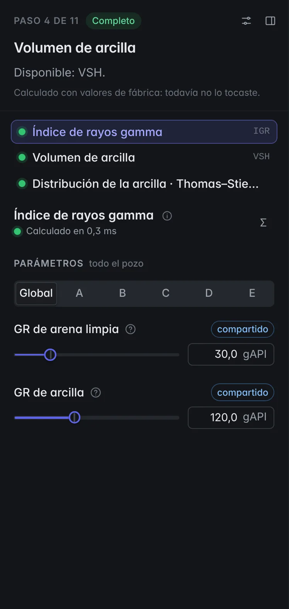
Encabezado. «Paso 4 de 11», el estado (Completo) y qué curva queda disponible. Debajo, si el paso está calculado con valores de fábrica o revisado.
Métodos. Una lista de opciones con la curva que produce cada una. La marcada alimenta los pasos siguientes; las alternativas se calculan para comparar y se pueden exportar.
Comparar. El interruptor pone las alternativas lado a lado en el visor.
Parámetros. Un selector Global · A · B · C · D · E define si el valor vale para todo el pozo o para una zona. La etiqueta compartido marca un parámetro que usan varios módulos (por ejemplo a y m entre Archie y R0).
Ⓘ y Σ. Cada parámetro tiene una ayuda corta; Σ abre las ecuaciones del método. La interfaz no muestra fórmulas: están todas en Ecuaciones.
Herramientas. Tablas, mini-gráficos y estadísticas del paso.
El visor multipista.
Dibujado en canvas para mover decenas de miles de muestras sin trabas. Respeta las convenciones de lectura de la industria —GR verde, resistividad profunda roja en escala log, densidad y neutrón cruzados— con un acabado más limpio.
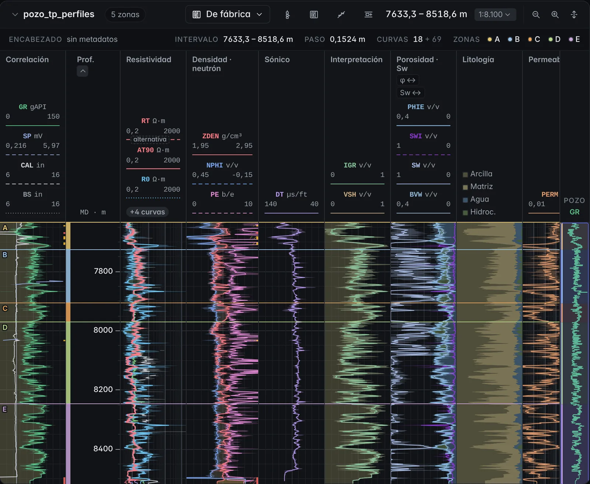
Las pistas de la plantilla de fábrica
| Pista | Curvas | Cómo se lee |
|---|---|---|
| Correlación | GR SP CAL · BS | Arcilla a la derecha; el caliper separado del trépano marca derrumbe. |
| Profundidad | MD (m) | Topes de zona y notas ancladas. |
| Resistividad | RT AT90 · R0 +4 | Escala logarítmica 0,2–2000 Ω·m. Rt por encima de R0 = hidrocarburo. |
| Densidad · neutrón | ZDEN NPHI PE | Escalas compatibles con arenisca; el cruce marca gas. |
| Sónico | DT | 140–40 µs/ft. |
| Interpretación | IGR · VSH | Relleno de arcillosidad. |
| Porosidad · Sw | PHIE SWI · SW BVW | Relleno de hidrocarburo entre PHIE y BVW. |
| Litología | Columna volumétrica | Arcilla, matriz, agua e hidrocarburo apilados por muestra. |
| Permeabilidad · Pozo | PERM | Escala log en mD, y una mini-pista del pozo completo para ubicarte. |
Moverse por el pozo
Zoom y escala
Botones + y −, rueda, o la escala de la barra (1:200 a 1:8.100). 0 muestra todo el pozo.
Intervalo
Escribí tope y base en m MD y Mostrar tramo. Los chips Ver la zona A…E encuadran una zona.
Cursor
Pasá el puntero: los encabezados muestran la lectura de cada curva. ↑ ↓ lo mueven muestra a muestra.
Topes
Arrastrá el límite de una zona sobre el perfil. Con el tope activo, ↑ ↓ lo afinan (Mayús ×10).
La lupa
Tocá L con el puntero sobre el perfil: se abre un detalle a 1:200 que sigue al cursor sin perder el contexto del pozo entero. La rueda cambia el aumento entre 1:50 y 1:1.000; Esc la cierra.
Sirve para leer capas finas, picos del caliper o el punto exacto de un tope sin cambiar la escala de trabajo.
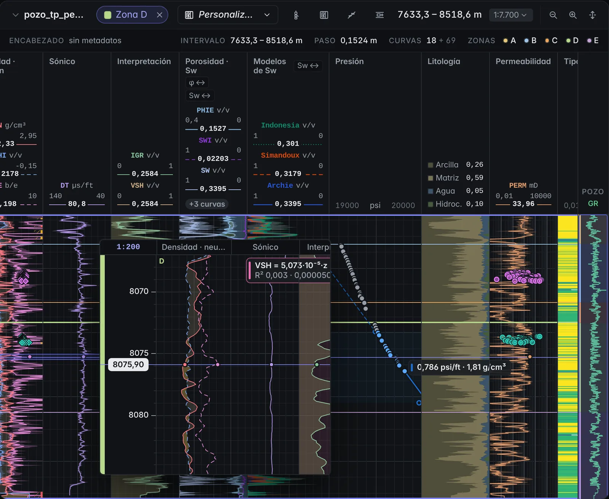
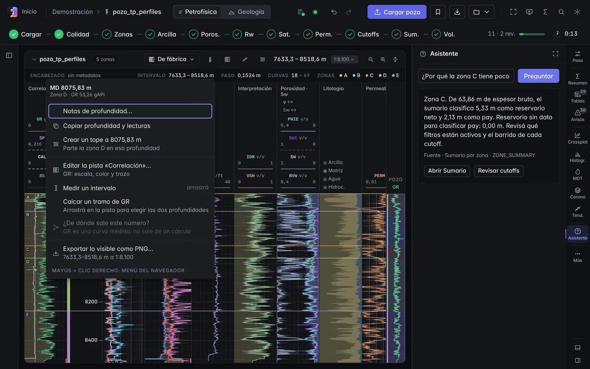
El menú del perfil
Clic derecho sobre el perfil (o Mayús F10) abre las acciones de esa profundidad:
- Notas de profundidad: texto anclado a una MD o a un intervalo, que se ve en el perfil y se exporta.
- Copiar profundidad y lecturas al portapapeles.
- Crear un tope en esa profundidad.
- Editar la pista: escala, color y trazo de cada curva.
- Medir un intervalo arrastrando.
- Calcar un tramo: la curva fantasma (abajo).
- ¿De dónde sale este número? sobre una curva calculada.
- Exportar lo visible como PNG.
Mayús + clic derecho abre el menú normal del navegador.
Más herramientas del visor
Curva fantasma
Calcá un tramo de una curva (por ejemplo el GR de una arena) y arrastralo a otra profundidad para correlacionar. Muestra el desplazamiento en metros.
Menú del perfil → Calcar un tramoBandas de incertidumbre
Una franja P10–P90 alrededor de Sw y de la porosidad efectiva muestra cuánto pueden variar con la incertidumbre de los parámetros.
Panel del paso → Mostrar banda de incertidumbreCurva por fórmula
Creá una curva nueva escribiendo una expresión con mnemónicos o @ROL, por ejemplo AT90/AT10 o PHIE*(1-SW). Detecta errores de sintaxis, referencias inexistentes y ciclos; se exporta con su fórmula en el LAS.
Tramo a gráficos
Mayús + arrastre en el visor marca un tramo que se resalta en el crossplot y el histograma. Funciona al revés: una clase del histograma marca sus tramos en el perfil.
Mayús + arrastre · Esc limpiaEncabezado del pozo
Metadatos del LAS sobre las pistas. Se puede compactar y activar la lectura amplia de encabezados.
Barra del visorPerfil clásico
Una paleta alternativa con colores oscuros y trazos finos, como un perfil impreso de compañía de servicios.
Plantillas de pistasArmar pistas y plantillas
El botón Pistas abre el armador: buscá una curva o herramienta y arrastrala a una pista existente o al hueco entre dos para crear una nueva. Las curvas se reordenan arrastrando y cada una se edita con su escala, color y trazo.
Hay pistas especiales: profundidad y zonas, columna volumétrica, presión MDT y tipo de roca. Guardar como… guarda la disposición como plantilla propia; Restablecer vuelve a la de fábrica.
Teclado: Alt+flechas mueve una pista o curva, Alt+Mayús+← → cambia el ancho, Supr la quita.
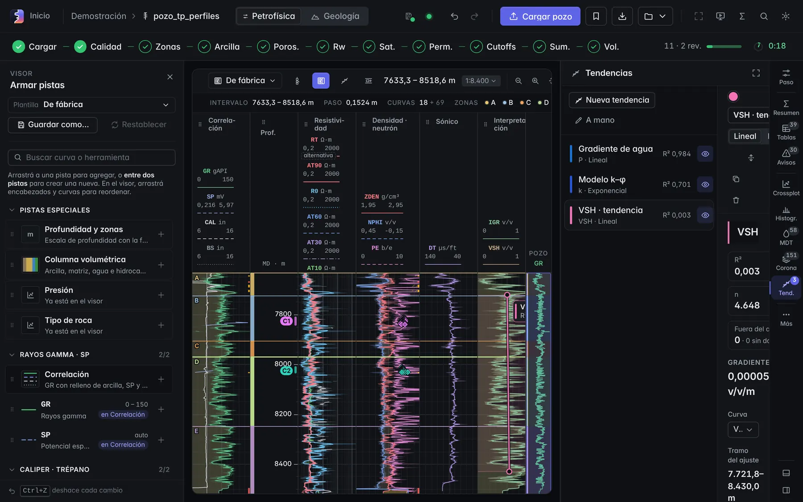
Los módulos obligatorios.
Los seis módulos que pide el profesor están completos y conectados entre sí: lo que hacés en uno aparece en el visor y en los otros gráficos.
Presión contra profundidad, gradientes, densidades y contactos.
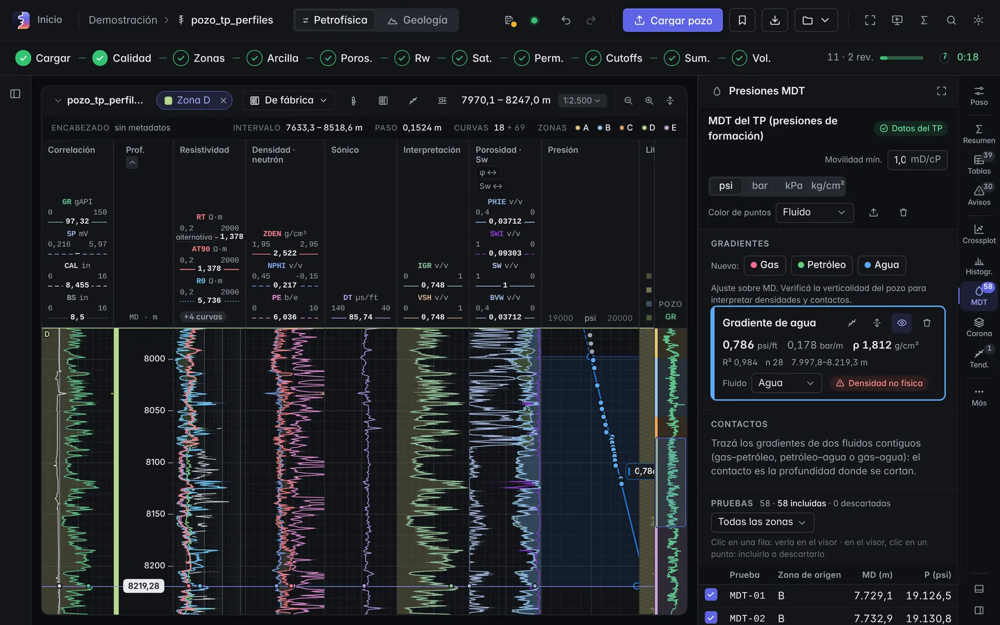
- Abrí MDT en el riel y Cargar presiones (CSV o Excel) o Cargar presiones del TP.
- Elegí unidades:
psi·bar·kPa·kg/cm². Filtrá por movilidad mínima (mD/cP) para descartar pruebas apretadas. - En Gradientes → Nuevo elegí Gas, Petróleo o Agua y arrastrá sobre la pista de presión para tomar los puntos del tramo.
- Cada gradiente muestra psi/ft, bar/m y la densidad del fluido en g/cm³, con R², n y el tramo. Si la densidad no es física, lo avisa.
- Trazá los gradientes de dos fluidos contiguos: el contacto es la profundidad donde se cortan. Se puede usar como tope de zona.
Clic en una fila de la tabla ubica la prueba en el visor; clic en un punto del visor la incluye o la descarta. Los puntos se colorean por fluido o por drawdown.
Cualquier curva contra cualquier otra, en dos clics.
Ejes. Elegí la curva de X y de Y en sus listas. Cada eje tiene escala Auto · Lin · Log, rango mínimo y máximo editable a mano con Restablecer, y el botón ⇅ intercambia los ejes.
Color. Por una tercera curva (rampa viridis) o por capa, con la leyenda de zonas debajo.
Cutoffs arrastrables en X y en Y: agregalos y movelos sobre el gráfico. Si el cutoff es el del módulo de Cutoffs, moverlo recalcula el pay y el sumario.
Filtro por capa. Los chips de zona muestran u ocultan puntos.
Selección conectada. Un rectángulo o un lazo sobre la nube marca esos puntos en el visor (Mayús suma o quita). Y al revés: Mayús + arrastre en el visor resalta el tramo en el crossplot.
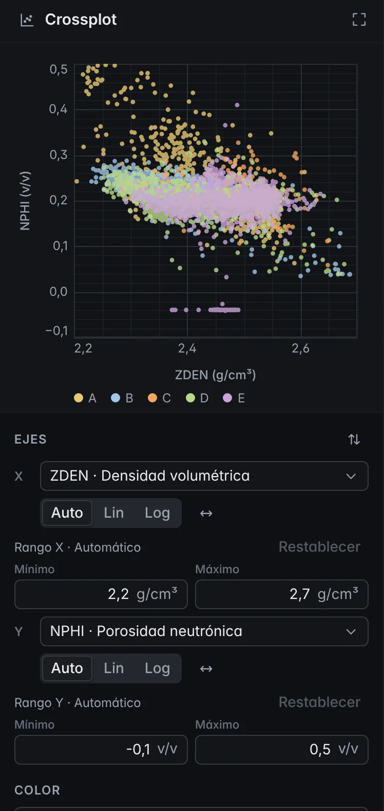
Plantillas de libro
Paleta de comandos → «plantilla». Cada plantilla fija ejes y escalas y dibuja sus líneas de referencia; algunas permiten elegir parámetros sobre el gráfico (Pickett: Rw, m y n; Thomas–Stieber: puntos de arena limpia y arcilla).
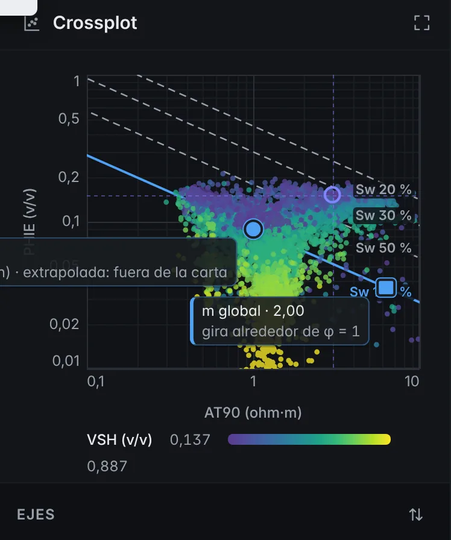
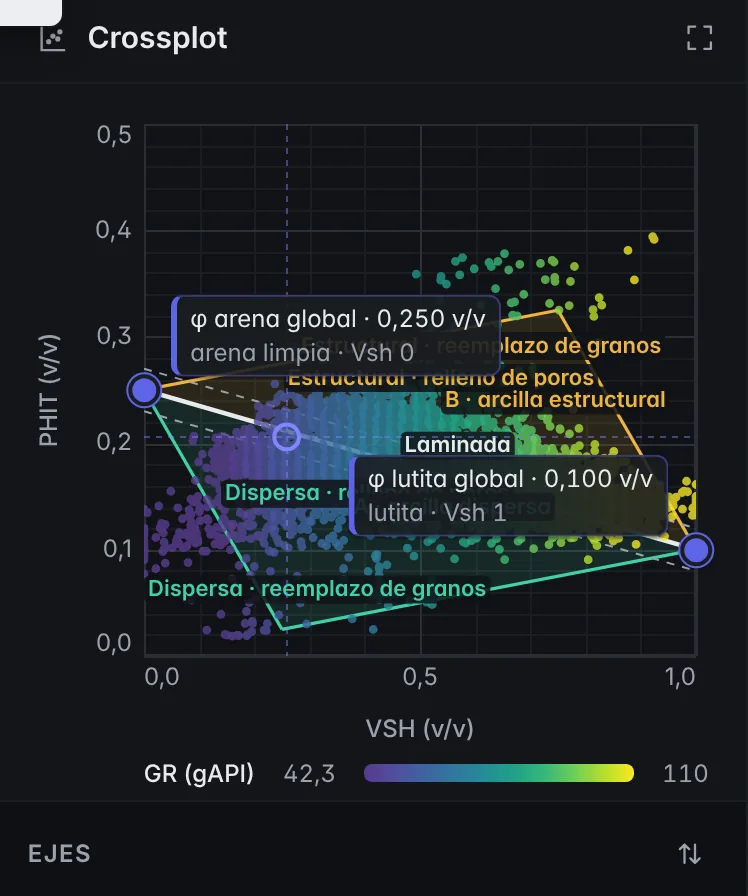
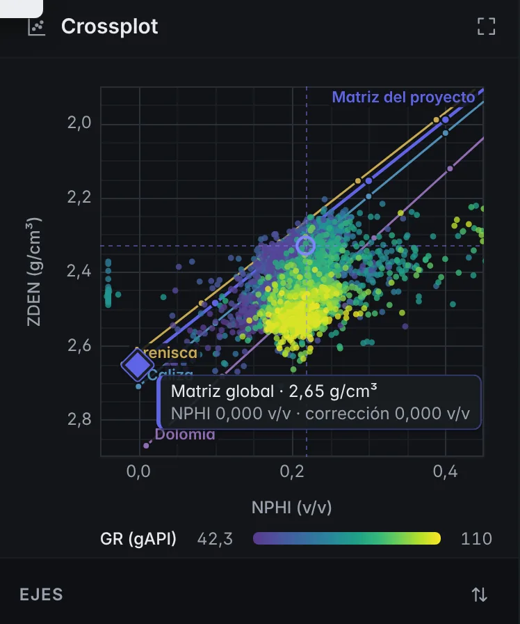
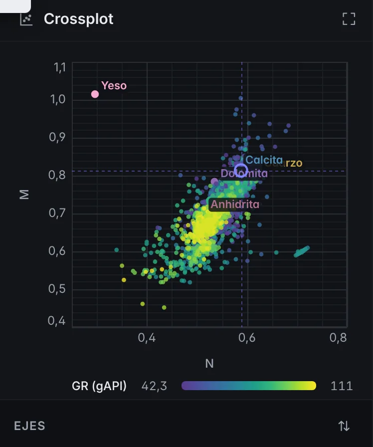
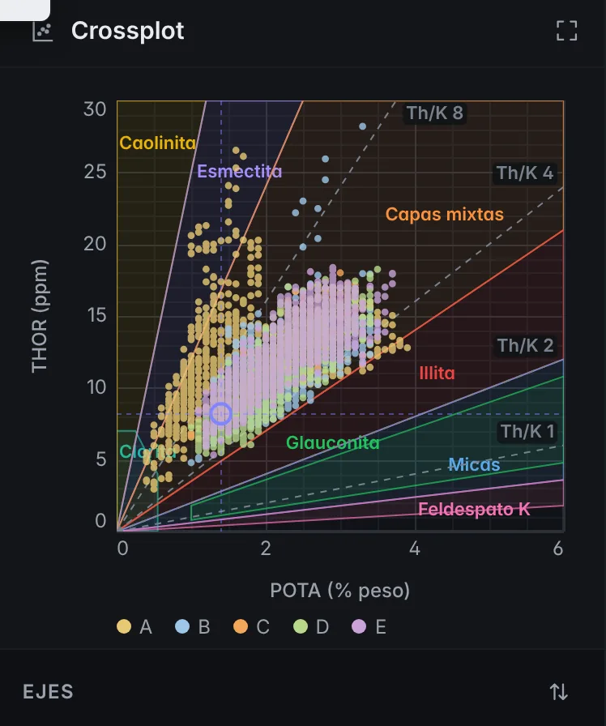
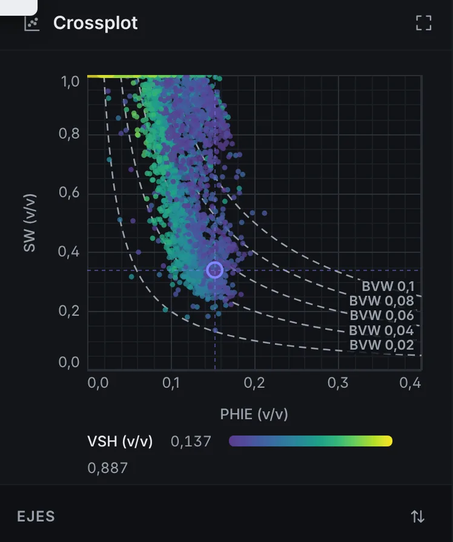
Plugs en profundidad y modelo k–φ.
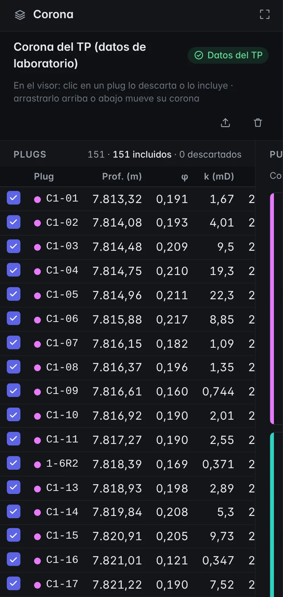
- Cargar plugs desde CSV/Excel: profundidad, porosidad, permeabilidad (mD) y densidad de grano (g/cm³). Las unidades se convierten. O Cargar corona del TP.
- Puesta en profundidad. En el visor, arrastrá los plugs arriba o abajo: se mueve toda la corona hasta que el φ de laboratorio coincide con el perfil. ↑ ↓ afinan.
- Un clic sobre un plug en el visor lo descarta o lo incluye. La tabla dice cuántos quedan (151 incluidos · 0 descartados).
- El modelo k–φ aparece en Tendencias (exponencial o potencial, con R²) y se aplica como fuente de PERM por zona.
La corona también alimenta la calibración de ρmaa, los tipos de roca (FZI y Winland) y el torneo de modelos.
Distribuciones por capa, con cutoff arrastrable.
Cualquier curva, con escala Auto · Lin · Log y número de clases.
Líneas de arcilla. Con GR, las líneas de GR limpio y GR arcilla se arrastran sobre el histograma y el Vsh se recalcula en vivo.
Varias capas superpuestas. Elegí zonas con los chips, activá Un histograma por zona y Normalizar a % para comparar zonas de distinto espesor. Curva acumulada agrega la frecuencia acumulada.
Cutoff libre para explorar sin tocar la petrofísica, o el cutoff del módulo, que sí la cambia.
Estadísticos por serie: n, media, P10, P50 y P90.
Clic en una clase marca sus tramos en el visor y sus puntos en el crossplot.
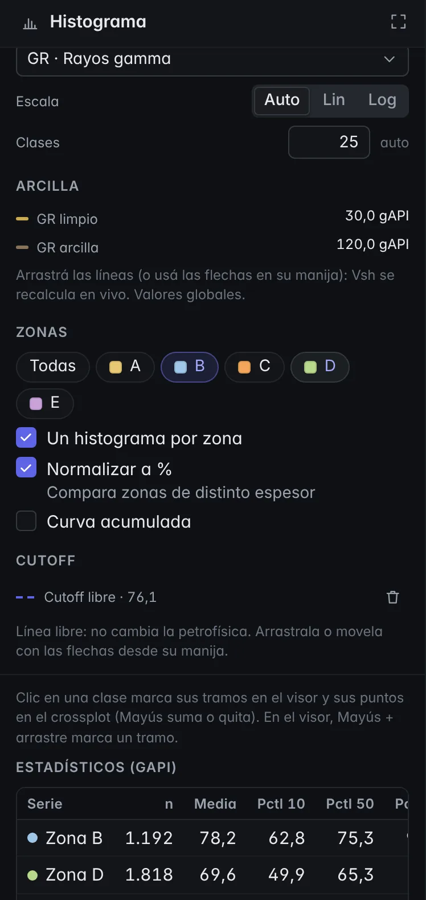
Ajustes sobre cualquier curva o gráfico.
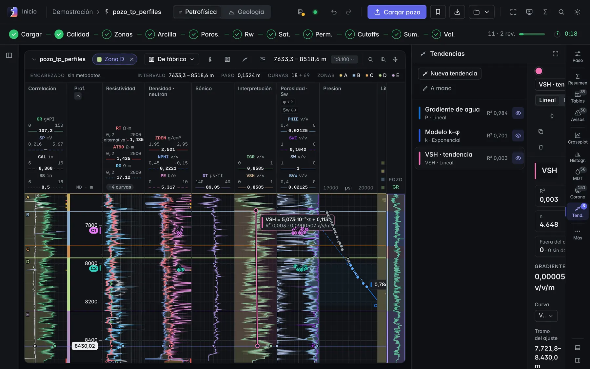
- Nueva tendencia y arrastrá sobre una curva del visor para elegir el tramo. O A mano, dibujando la recta.
- Elegí el ajuste: lineal, logarítmico, exponencial o potencial. La ecuación y el R² se ven sobre el perfil.
- El gradiente sale en unidades de campo: presión (psi/ft), temperatura (°C/100 m), compactación (µs/ft por m).
El panel junta todas las tendencias del proyecto, incluidas las que crean otros módulos: Gradiente de agua (MDT, R² 0,984) y Modelo k–φ (corona, R² 0,701). Cada una se oculta, duplica o borra.
Catálogo de métodos.
Cada método es una función pura con tests contra resultados de libro. Muchos parámetros se eligen por zona, porque la edad de la roca, la matriz o el agua cambian de capa a capa.
Leer la roca, no solo el fluido.
El espacio Geología usa el mismo pozo y las mismas zonas, con cinco pasos: Cargar, Calidad, Zonas, Litología y Geología. Cambia la plantilla del visor: GR espectral, electrosecuencias, mineralogía, impedancia, sintético y columna.
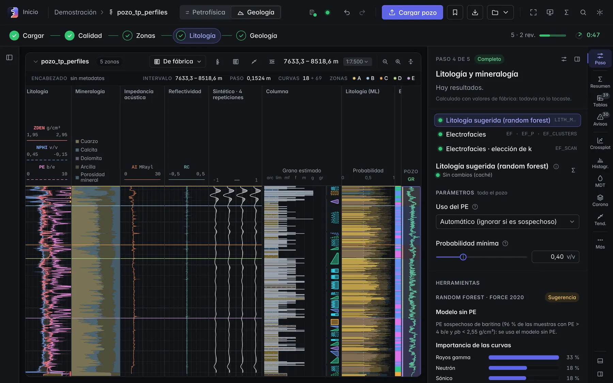
- Litología sugerida (random forest)
Entrenado con FORCE 2020. Si el PE es sospechoso (baritina), usa el modelo sin PE. Muestra probabilidad mínima e importancia de cada curva. - Electrofacies
Agrupa muestras por respuesta parecida, sin etiquetas: mezcla gaussiana o k-means. Son grupos de respuesta, no litologías. - Electrofacies · elección de k
Curvas de BIC e inercia de 2 a 8 grupos, con el k sugerido.
- Zonas sugeridas
Propone topes donde cambia el GR (y opcionalmente densidad y resistividad). Se aceptan de a uno o todos. - Electrosecuencias
Tendencias granocrecientes y granodecrecientes por tramo. - Tipo de arcilla · GR espectral
Th–K, afinidad mineral y Th/U por zona; uranio alto como alerta. - Mineralogía · PE–densidad
Cuarzo, calcita, dolomía, arcilla y porosidad con cierre y residuo. - Índices de litología
M, N, Umaa y Th/K como curvas. - Carbono orgánico · Passey
ΔlogR, TOC con madurez elegida y bandera de roca generadora. - Sismograma sintético
Impedancia, reflectividad y convolución con Ricker; frecuencia, paso y polaridad. - Columna sedimentológica
Litología y grano estimados, bloqueados en capas.
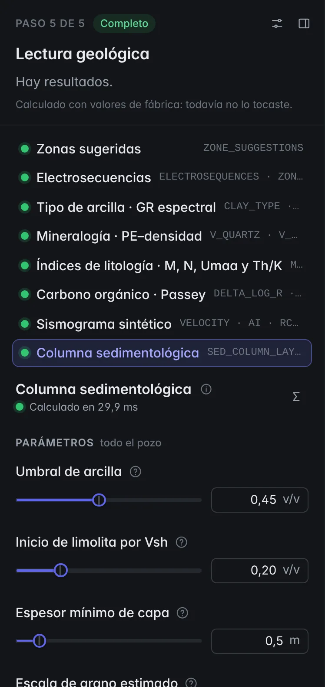
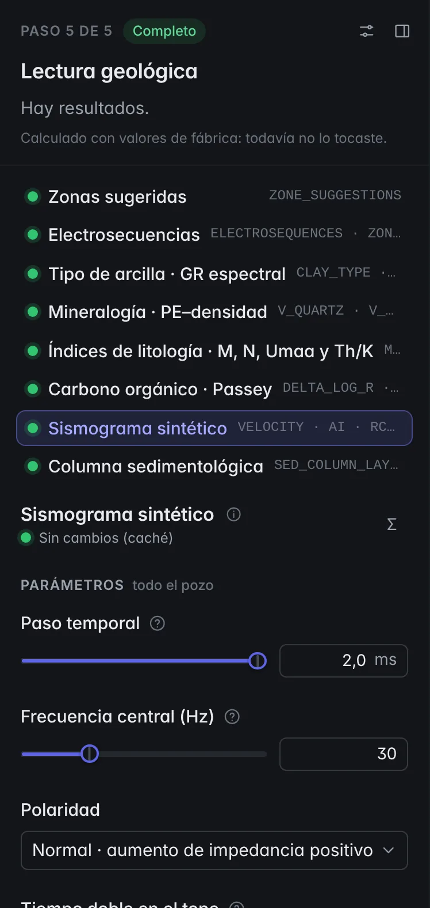
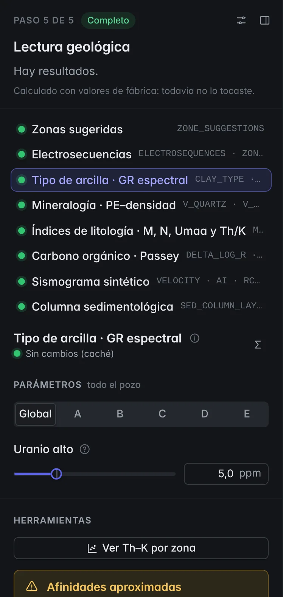
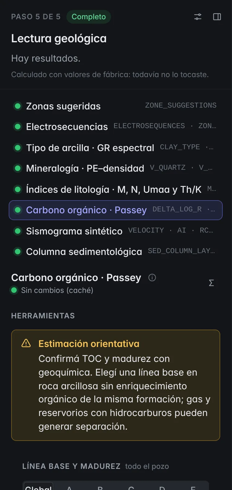
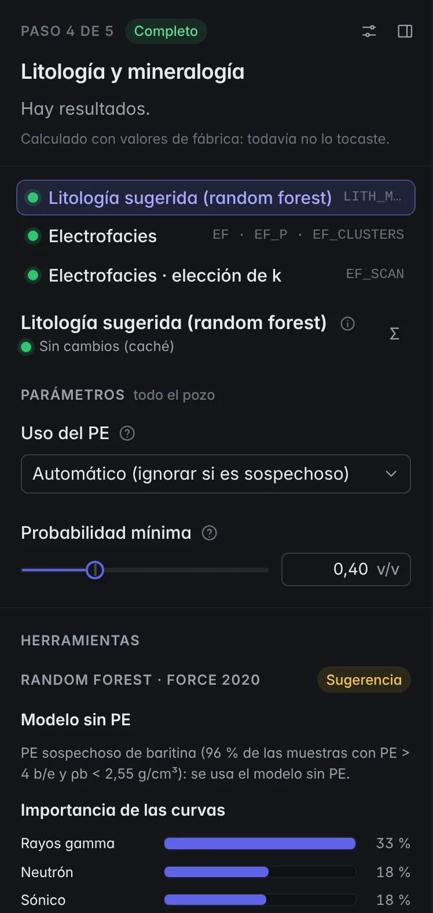
Preparar datos sin perder el original.
Las correcciones son recetas: cada etapa es opcional, se previsualiza antes de aplicar y se puede deshacer. El dato medido nunca se pisa; una muestra estimada nunca pasa a ser medida.
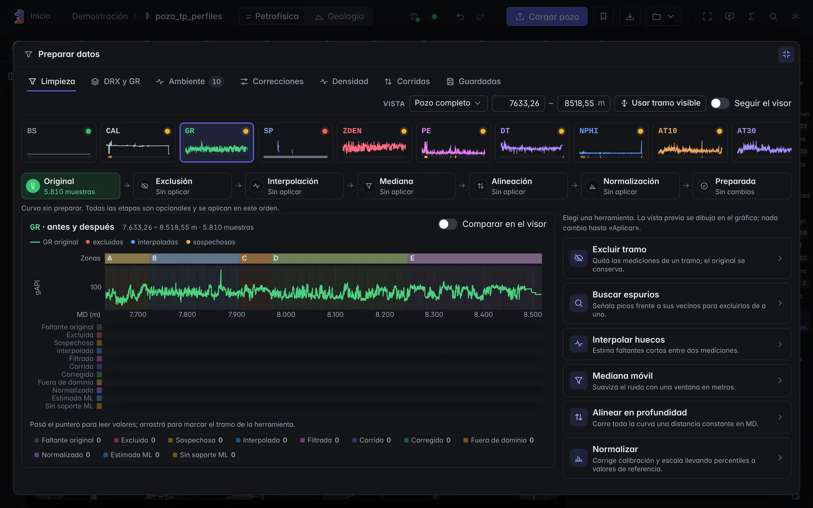
Pestañas
| Limpieza | Excluir tramo, buscar espurios, interpolar huecos, mediana móvil, alinear en profundidad, normalizar. |
| DRX y GR | Carga de laboratorio de difracción, comparación con el perfil y calibración de los extremos del GR. |
| Ambiente | Diagnóstico por zona: caliper, ensanchamiento, PE sospechoso, separación de inducción. |
| Correcciones | Corrección ambiental de GR (LDEO MGT) cuando se cumplen sus condiciones. |
| Densidad | Densidad estimada en los derrumbes con un bosque aleatorio entrenado en la densidad sana del mismo pozo. |
| Corridas | Agrupa curvas que comparten adquisición y alineación. |
| Guardadas | Recetas aplicadas, con su historia. |
Cómo se usa
- Elegí la curva original y el tramo en m MD (los extremos se incluyen). Usar tramo visible toma el del visor.
- Revisá los sospechosos antes de excluir: un pico puede ser una capa fina real.
- Generá la vista previa y compará original, preparada y faltantes. Comparar en el visor las superpone en el perfil.
- Aplicá explícitamente. Guardá un snapshot antes de calibrar.
Bits de la columna QC exportada
Probar, comparar, explicar.
Herramientas para responder las preguntas de la defensa: de dónde sale cada número, qué cambia si muevo un cutoff, cuánto cambió desde la versión anterior y qué tan incierto es el volumen.
Snapshots y cortina antes/después
Un snapshot congela zonas, parámetros y métodos. Guardá uno antes de probar otros valores: después podés volver a él, comparar el sumario o abrir la cortina, que divide el visor en antes y después con un separador que se arrastra.
- Snapshots → Guardar snapshot (con nombre opcional).
- Cambiá parámetros, métodos o topes.
- Paleta → Cortina antes/después o Comparar con snapshot.
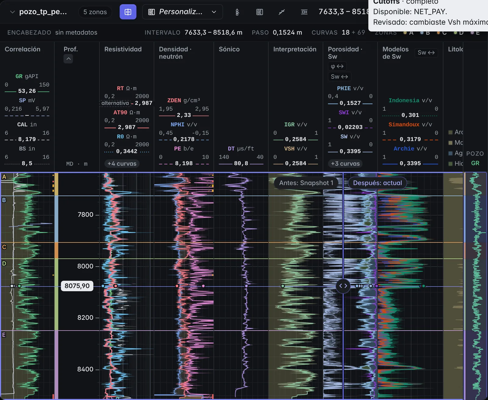
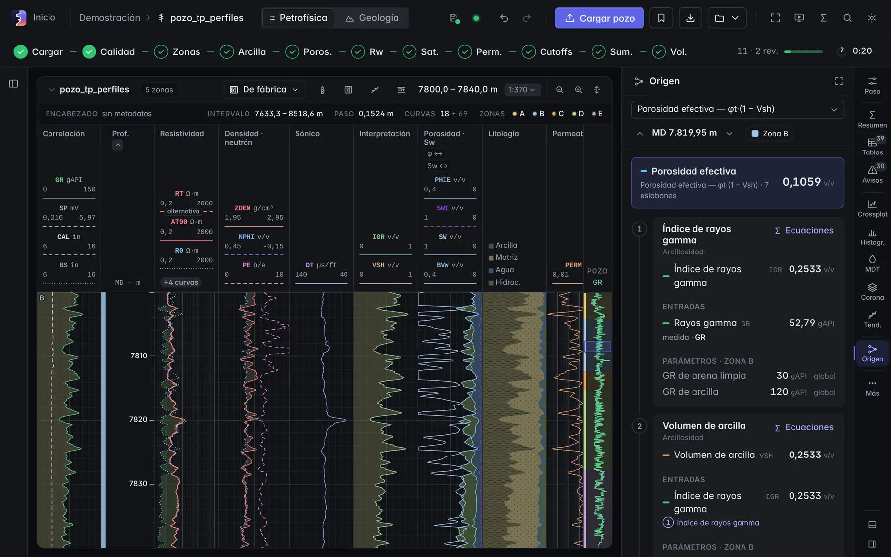
¿De dónde sale este número?
Clic derecho sobre una curva calculada → ¿De dónde sale este número? El panel Origen muestra, para esa profundidad, el valor y toda la cadena que lo produce: método, entradas con su lectura, parámetros con la zona de la que vienen, y un enlace a sus ecuaciones.
Por ejemplo, PHIE = 0,1059 a 7.819,95 m en la zona B ← Vsh 0,2533 ← IGR 0,2533 ← GR 52,79 gAPI con GR limpio 30 y GR arcilla 120.
Vistas guardadas y modo defensa
Guardar la vista actual captura intervalo, plantilla de pistas y paneles. El modo defensa oculta la interfaz y recorre las vistas a pantalla completa con ← →; Esc sale. Preparás la presentación dentro de la propia app.
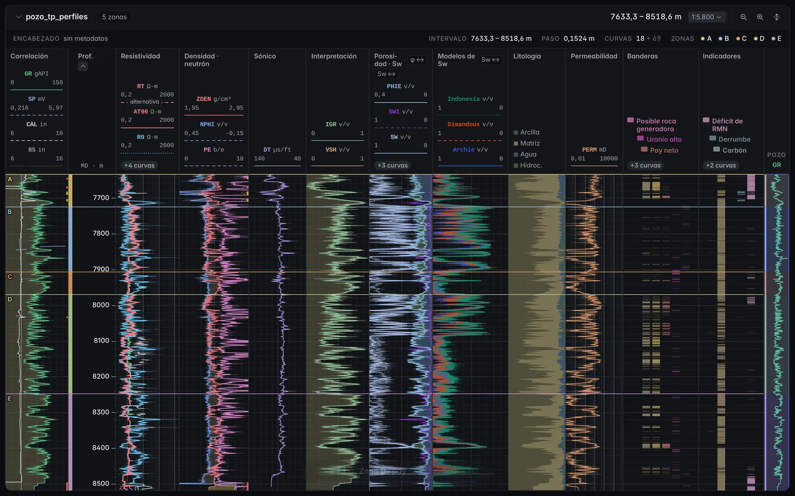
Sensibilidad e incertidumbre
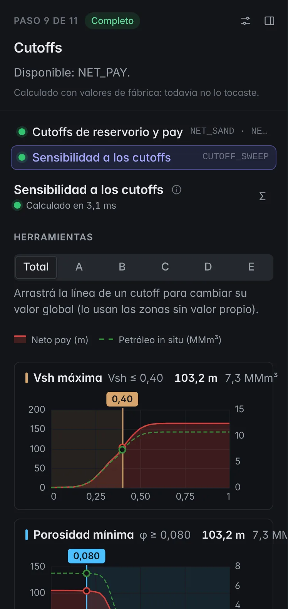
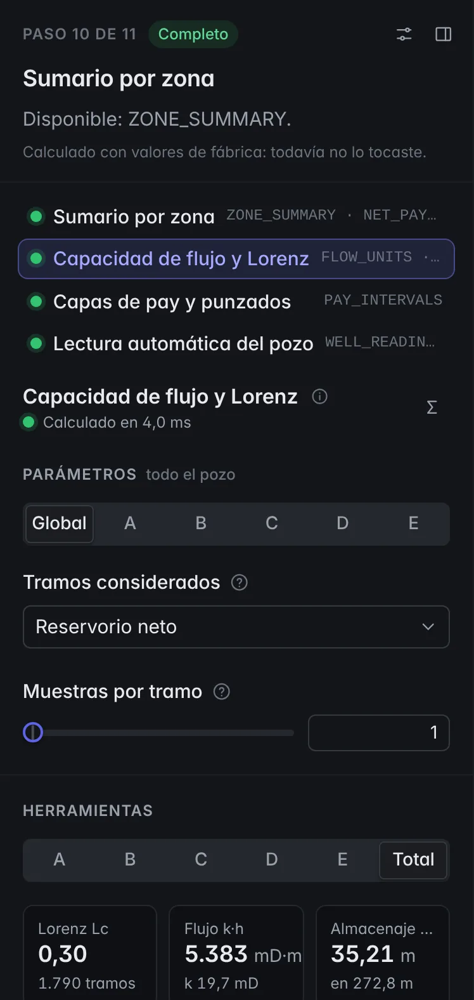
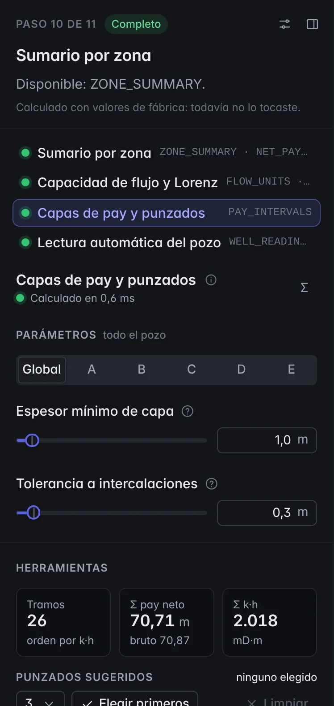
Incertidumbre del volumen (paso Volumen): Monte Carlo sobre área, factor de volumen, porosidad, Sw y cutoffs → P90, P50 y P10 del volumen in situ por zona y qué parámetro lo mueve más.
Más herramientas de validación
Avisos agrupados
Errores, advertencias e información por paso y por módulo. Un clic abre el paso y lleva el visor a la zona; «Marcar como visto» se guarda en el proyecto.
Revisado
El contador separa los pasos calculados con valores de fábrica de los que tocaste: «11 · 2 rev.». Un paso se marca solo cuando cambiás un parámetro o una fuente.
Cronómetro
Mide el recorrido completo desde la carga. Se reinicia desde la paleta.
Entrenador
Genera un pozo sintético con porosidad y Sw conocidas (semilla opcional, ruido de medición). Interpretás y al Corregir ejercicio compara tu resultado con la verdad sembrada.
Torneo contra corona
Combina métodos de Vsh, porosidad y Sw y los ordena por ajuste a la corona. Aplicar una combinación guarda un snapshot y se deshace.
Asistente sin modelo
Preguntas sobre el pozo («Mostrame Sw en la zona D», «¿Por qué la zona C tiene poco pay?», «¿Cómo funciona Archie?») respondidas con reglas y los datos del proyecto, citando la fuente. Funciona sin internet.
Copiar contexto para un chat
Copia un resumen del pozo, zonas, métodos y resultados listo para pegar en un chat con una IA.
Lectura automática
Resume en texto qué tramos son candidatos a gas, petróleo, agua o dudosos, por qué y con qué confianza.
Distribuciones por zona
Cajas o histogramas de una propiedad por zona, reservorio o pay, comparando la interpretación actual con la corona.
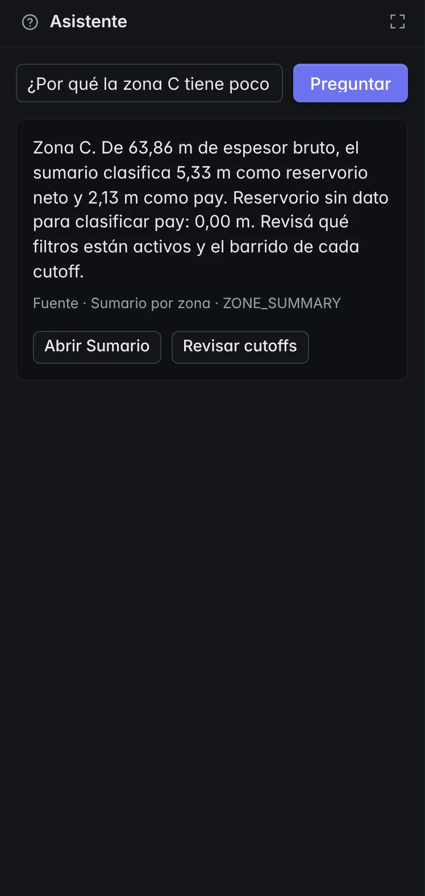
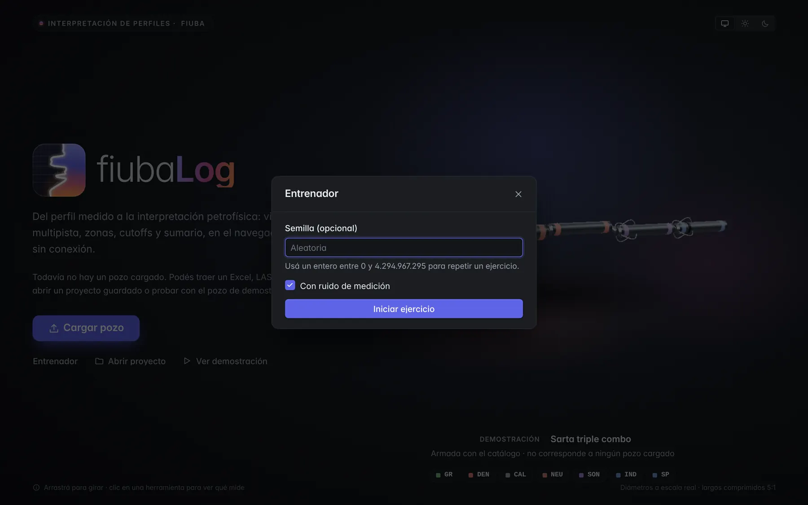
Herramientas.
Sarta de perfilaje en 3D
El botón Sarta arma la sarta a partir de las curvas del pozo: rayos gamma, gamma espectral, densidad, calibre, neutrón, sónico, resonancia magnética, inducción y SP. Cada herramienta muestra su profundidad de investigación.
La vista 3D dibuja el pozo con el calibre medido y el diámetro de invasión calculado, coloreado por litología sugerida. La pestaña Planificación permite prender y apagar herramientas para planificar una sarta nueva.
Perfil radial de invasión: para la profundidad del cursor, Rxo, Rt y di ajustados a la inducción de arreglo (AT10–AT90), con su residuo.
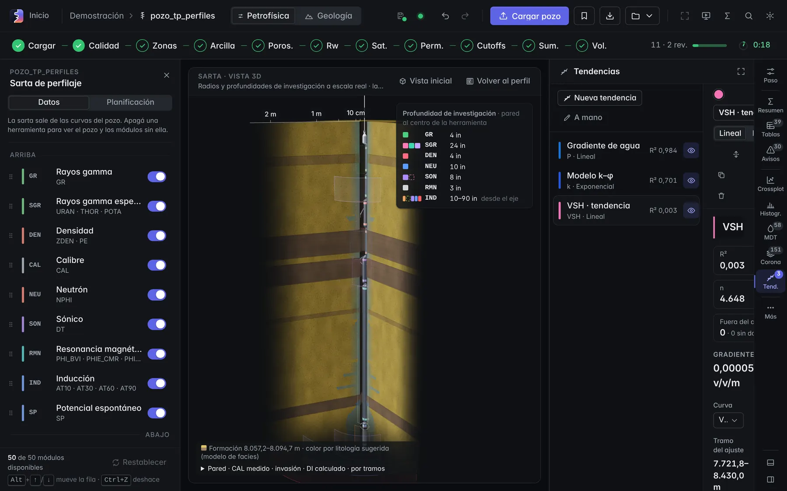
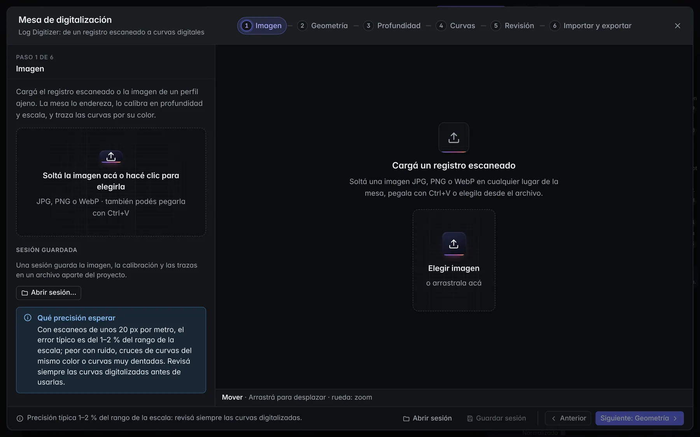
Log Digitizer
Convierte un perfil escaneado en curvas digitales, sin salir de la app.
- Imagen: soltá un JPG, PNG o WebP o pegalo con Ctrl+V.
- Geometría: enderezá la perspectiva.
- Profundidad: amarrá al menos dos profundidades conocidas.
- Curvas: marcá bordes y valores de la pista y trazá la curva por su color.
- Revisión: compará la traza con la imagen.
- Importar y exportar al pozo, o guardá la sesión.
Con escaneos de unos 20 px por metro, el error típico es de 1–2 % del rango de la escala. Revisá siempre las curvas digitalizadas.
Ecuaciones
La única pantalla con fórmulas. Lista los 56 métodos por categoría con su resumen, ecuaciones numeradas, tabla de parámetros (unidad, valor por defecto, rango, si es por zona) y referencias bibliográficas. Tiene buscador.
Se abre con Σ en la barra superior, desde cualquier panel de paso o con la paleta («ecuaciones»).
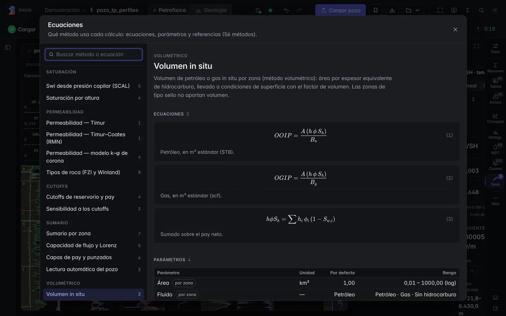
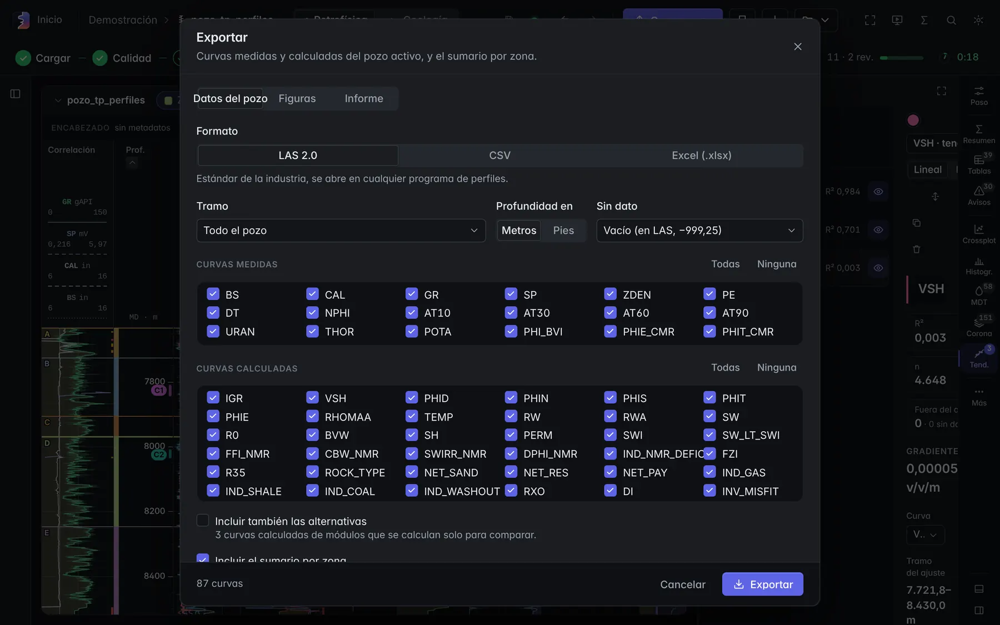
Exportar
Ctrl E abre tres pestañas:
| Datos del pozo | LAS 2.0, CSV o Excel. Tramo, metros o pies, valor sin dato (−999,25 en LAS), curvas medidas y calculadas, alternativas y sumario por zona. |
| Figuras | Visor, crossplots, histogramas y gráficos en imagen, con estilo independiente del tema. |
| Informe | Documento con referencias, relaciones adoptadas y parámetros, separando registros históricos de la interpretación actual. |
Atajos y paleta de comandos.
Ctrl K abre la paleta: escribí lo que querés hacer («saturación», «tema oscuro», «exportar», «plantilla Pickett») y tocá Intro. ? muestra esta hoja dentro de la app. En Mac, Cmd reemplaza a Ctrl.
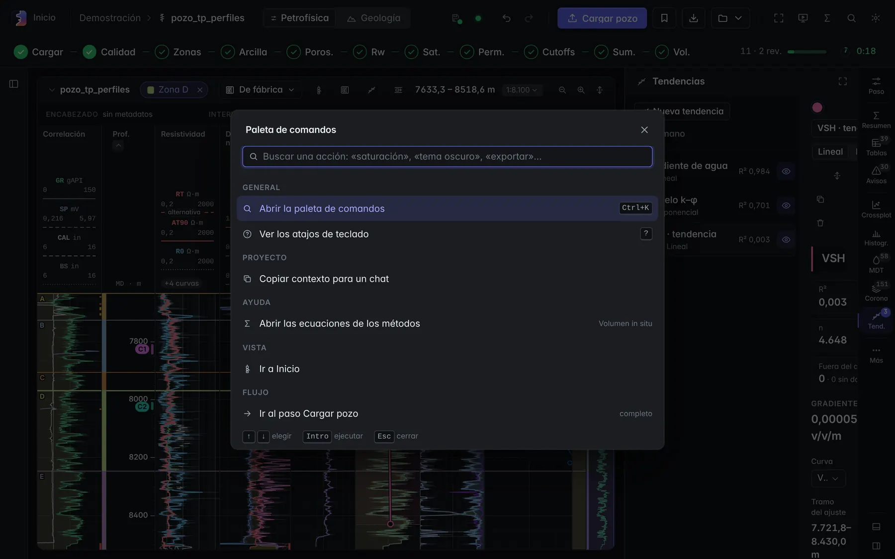
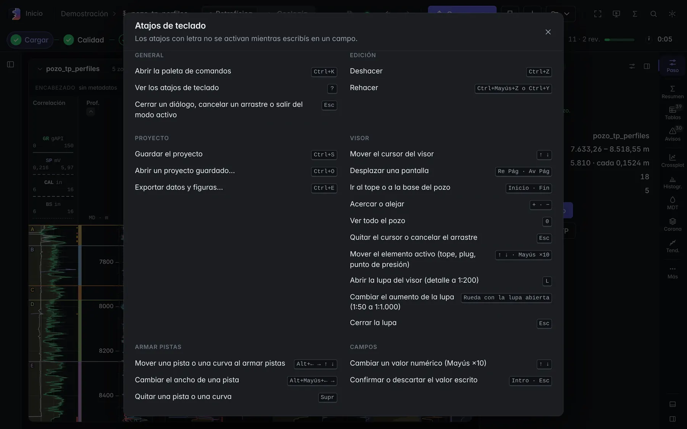
Curvas, colores y trazos.
Cada rol tiene un color y un trazo fijos en todo el programa: en el visor, en los crossplots, en los histogramas y en las figuras exportadas. Este es el juego que vas a ver.
El pozo del TP en números
Sumario por zona con los valores de fábrica del programa y un área de 1 km² por zona. Es un punto de partida para verificar que todo funciona, no la interpretación final.
| Zona | Intervalo (m MD) | Bruto (m) | Arena neta (m) | Reservorio (m) | Pay (m) | φ pay | Sw pay |
|---|---|---|---|---|---|---|---|
| A | 7.633,3 – 7.724,4 | 91,3 | 46,2 | 44,8 | 8,7 | 15,7 % | 47,6 % |
| B | 7.724,5 – 7.906,1 | 181,7 | 35,4 | 32,2 | 31,5 | 13,8 % | 33,5 % |
| C | 7.906,2 – 7.969,9 | 63,9 | 5,6 | 5,3 | 2,1 | 15,4 % | 44,0 % |
| D | 7.970,1 – 8.247,0 | 277,1 | 142,6 | 138,5 | 44,8 | 14,2 % | 41,0 % |
| E | 8.247,1 – 8.518,6 | 271,6 | 53,0 | 52,0 | 16,0 | 13,4 % | 43,5 % |
| Total | 885,4 m | 885,4 | 282,9 | 272,8 | 103,2 | 12,9 % | 40 % |
Problemas frecuentes.
El HTML no abre con doble clic en la computadora de la facultad
Algunos navegadores administrados bloquean archivos file://. El archivo no está roto: probá con otro navegador o abrilo desde un servidor HTTP local. La app no necesita servicios externos para calcular.
Recargué la pestaña y volvió al pozo de demostración
Volvé a Inicio y elegí Seguir donde quedaste. Si el navegador no permite almacenamiento local, solo queda el último .pozo.json que guardaste: guardá con Ctrl S después de cada cambio importante.
Una curva no aparece en el cálculo
Revisá el rol en el paso Columnas: sin rol, una curva se ve en el visor pero ningún módulo la usa. Si hay varias fuentes para el mismo rol, el panel del paso permite elegir cuál.
La barra dice «Completo» pero no toqué nada
Todos los pasos se calculan con valores de fábrica apenas cargás el pozo. El contador «rev.» cuenta los que revisaste. La leyenda «Calculado con valores de fábrica: todavía no lo tocaste» lo dice en cada paso.
El gradiente de MDT da una densidad imposible
La app lo marca como Densidad no física. Suele haber pruebas apretadas o de otro fluido en el tramo: subí la movilidad mínima, descartá puntos con un clic o achicá el tramo.
El Vsh se ve demasiado alto en toda una zona
Ajustá GR limpio y GR arcilla por zona, o arrastrá sus líneas en el histograma de GR. Probá un método no lineal (Larionov, Clavier o Steiber): el lineal es el más pesimista.
¿Dónde están las fórmulas?
Solo en Ecuaciones (Σ). La interfaz muestra resultados y parámetros; cada panel tiene un acceso directo a las ecuaciones de su método.